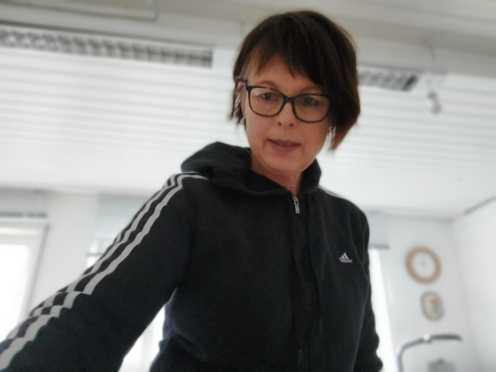

Brigitte Romann
Geboren in Schwabach. Aus- und Weiterbildung in verschiedenen künstlerischen Techniken, u.a. an der Sommerakademie Neuburg/Donau, der Europäischen Akademie für Bildende Kunst Trier, der Bundesakademie für kulturelle Bildung Wolfenbüttel und Thüringischen Sommerakademie für Kunst und Musik in Böhlen/Thür.